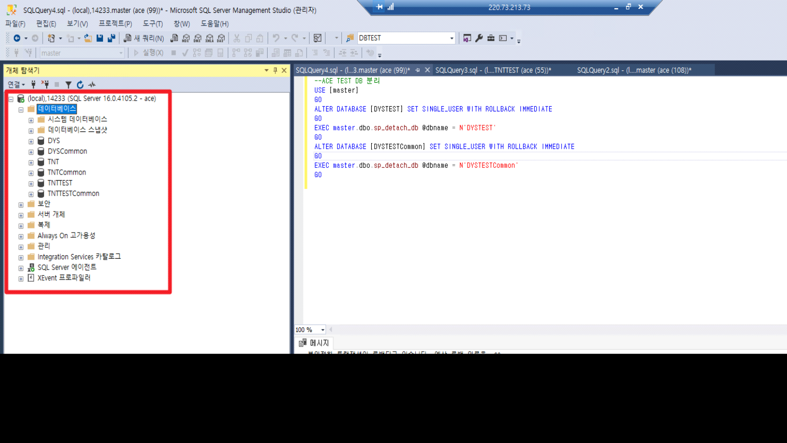
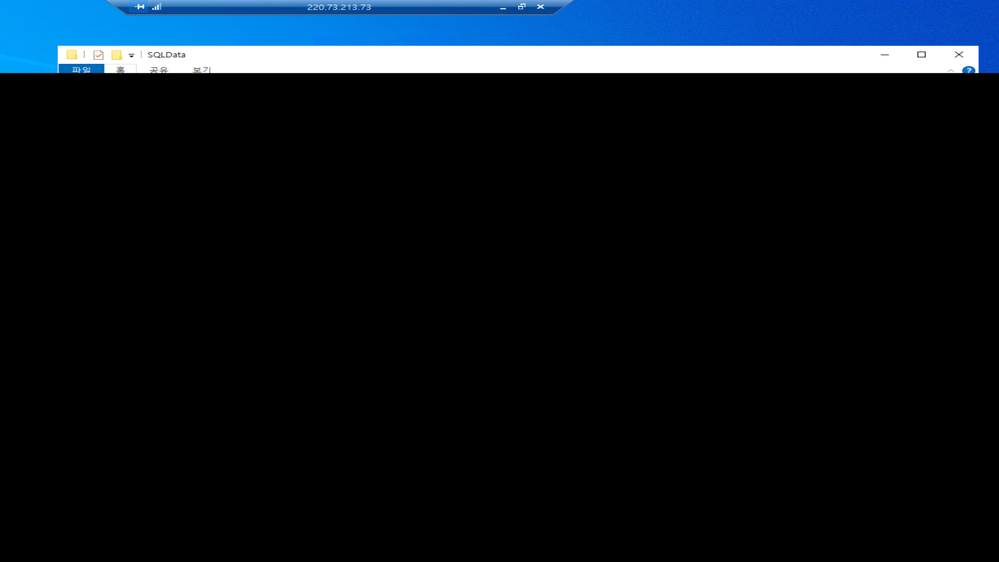
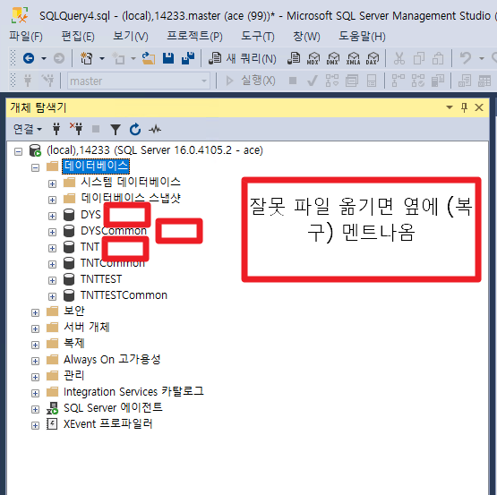
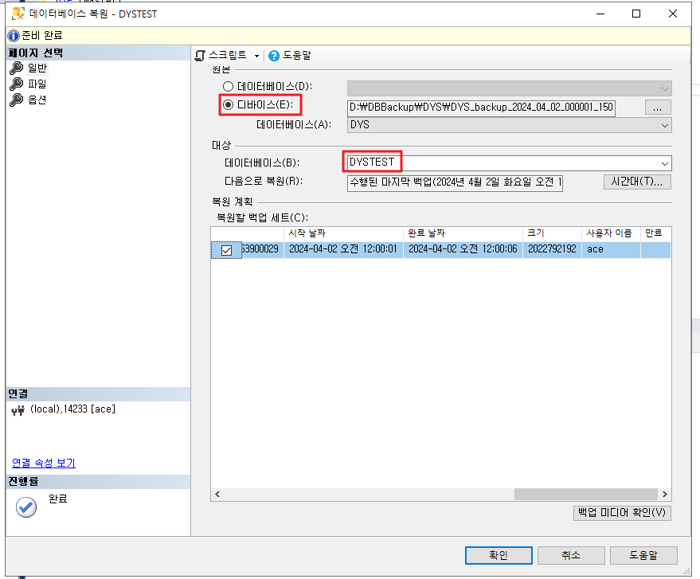
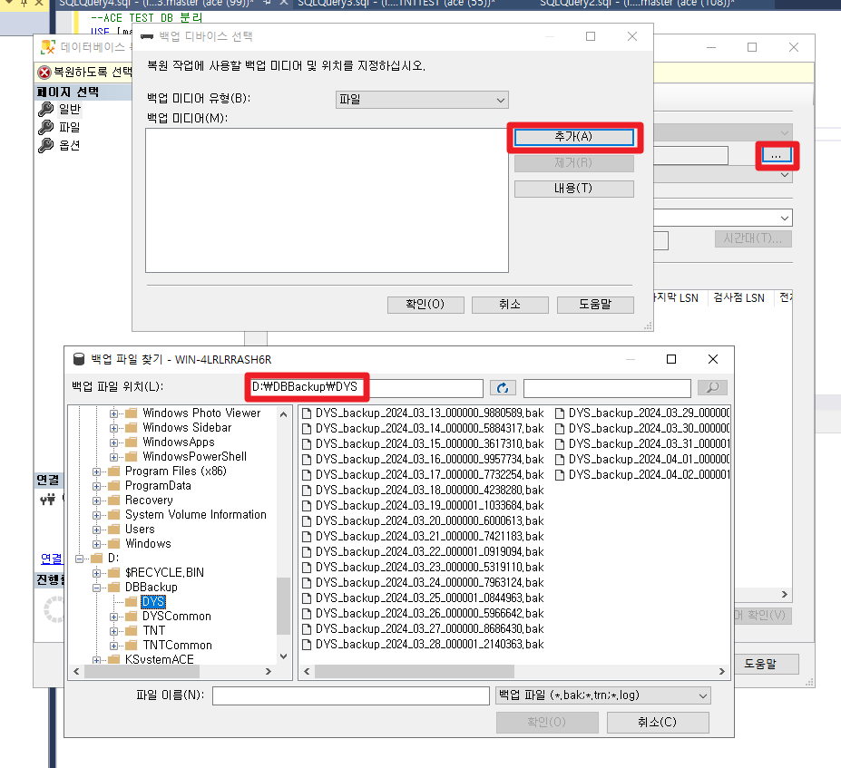
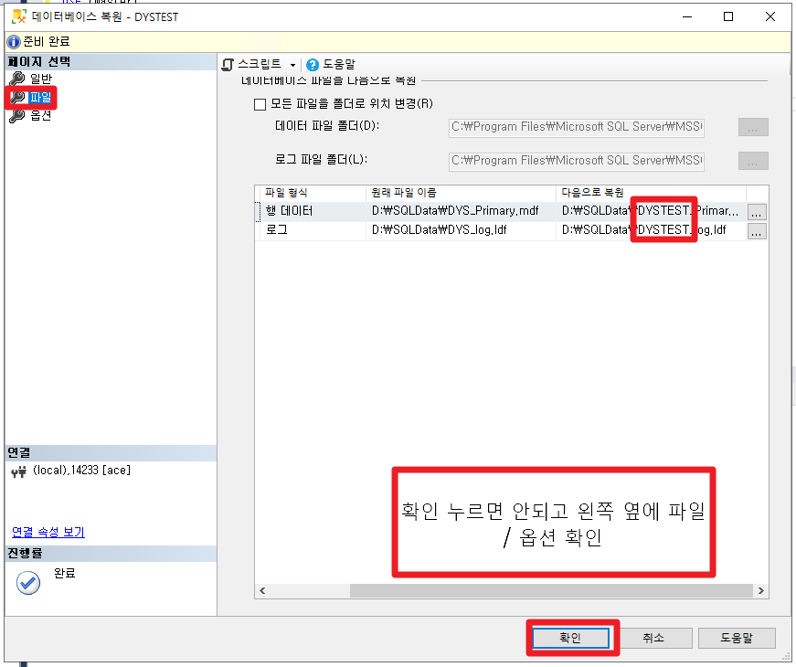
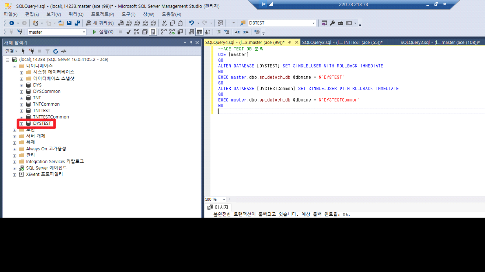

테스트 DB 생성 (ACE)
1. DB명 + TEST 데이터베이스 2개 (Common 포함) 분리
연결이 안끊켜있으면, 다른 DB에 영향을 준다. 그래서 먼저 연결 끊음
--ACE TEST DB 분리
USE [master]
GO
ALTER DATABASE [DYSTEST] SET SINGLE_USER WITH ROLLBACK IMMEDIATE
GO
EXEC master.dbo.sp_detach_db @dbname = N'DYSTEST'
GO
ALTER DATABASE [DYSTESTCommon] SET SINGLE_USER WITH ROLLBACK IMMEDIATE
GO
EXEC master.dbo.sp_detach_db @dbname = N'DYSTESTCommon'
GO
데이터베이스 - 새로고침 OR 데이터베이스 우클릭 - 새로고림 => TEST DB 분리되어있는지 확인

- 날짜 + 사이트 이니셜 (ex. 240402 DYS) 폴더 생성
테스트 파일 4개 옮기기 (분리가 안되어있는 파일 옮기면 다른 DB 복구 영향 주기 때문에 연결 확실히 끊켰는지 확인해야함


-
DB복원 작업
-
'데이터베이스' 우클릭
-
'데이터베이스' 복원
-
원본 - '디바이스' 선택
-
디바이스 옆 ... 클릭 => 추가 => D:\DBBackup\사이트이니셜 => 파일 선택
-
생성 이름 : DB명 + TEST
-



중요 !!
파일 : 원래 파일 이름 => 다음으로 복원
MED.mdf => MED_TEST.mdf => 여기서 TEST 붙여있는지 확인해야한다
MED.mdf => MED.mdf => 이러면 난리남 (실서버에 백업 데이터가 들어가기 때문)
옵션 : '비상 로그 백업' 체크 해제
+. Common 도 똑같이 반복 (* ~CommonTest 가 아니라 TestCommon
개체 탐색기 - 생성 확인

4. 인증키 ; APP 서버 (한 서버에 있다면 해당 서버)의 C드라이브 내에 DBQuery,txt 파일 안에 인증키 쿼리가
있음 => 쿼리 복사해서 sql 에서 복붙 후 실행
=> 실행 시 사이트이니셜 맞는지 확인
* ACE의 경우 추가 작업이 존재 => 5번
/image8.png)
- 5. IIS ( inetmgr) - 응용프로그램풀 (애플리케이션 풀) - DB명+TEST 이름이 포함된 응용프로그램 풀 5~10회 재생
+. 하는 이유 (에이스는 가끔 테스트 DB가 실서버와 연결되어 있을 수 있음)
+. 'IIS(인터넷 정보 서비스) 관리자' 실행
+. 맨 왼쪽 WIN~ 트리 열기 => 응용 프로그램 풀 더블클릭 => 이 IIS에 연결되어있는 풀이 나옴 => medtest_WK 클릭 후 오른쪽에 '재생' 5~10번 정도 클릭
+. 사이트에 따라 2개가 있을 수 있음 (ex. dystest_WK / dystest_WSvc)
+. 요청자한테 테스트 확인
/image9.png)